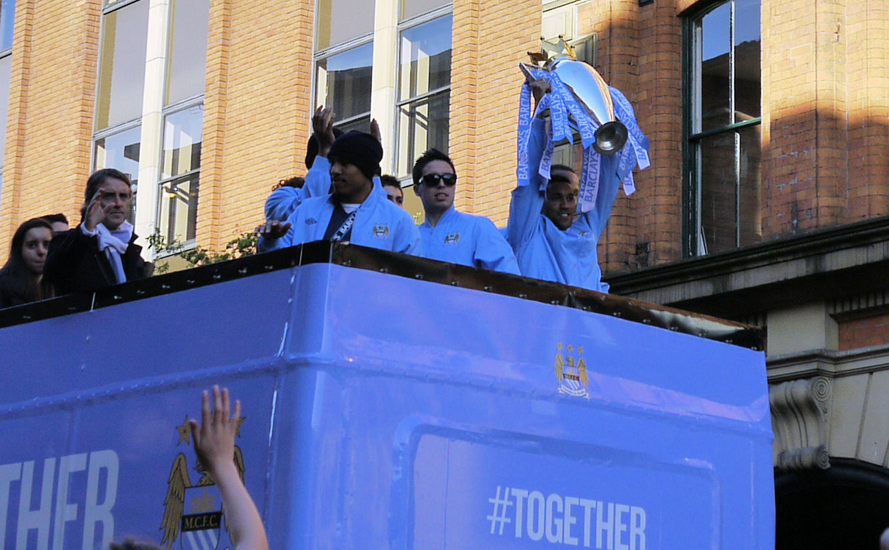
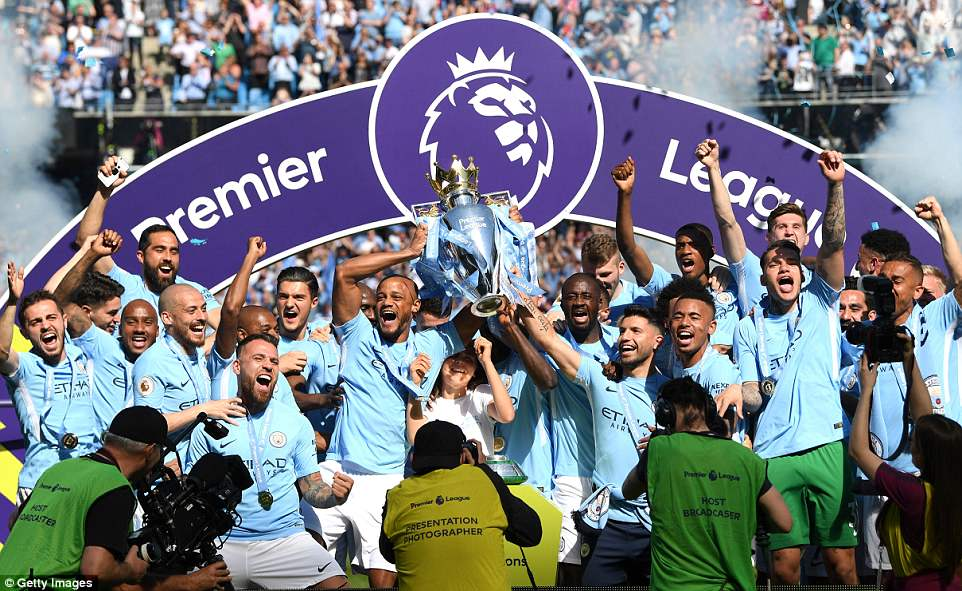
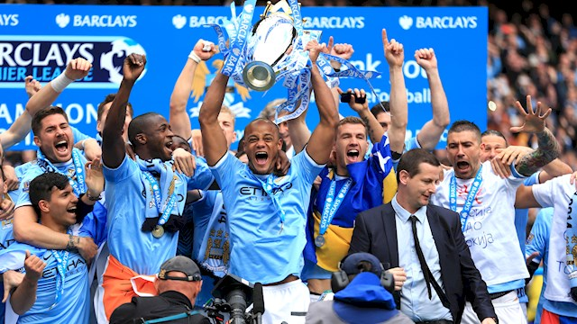
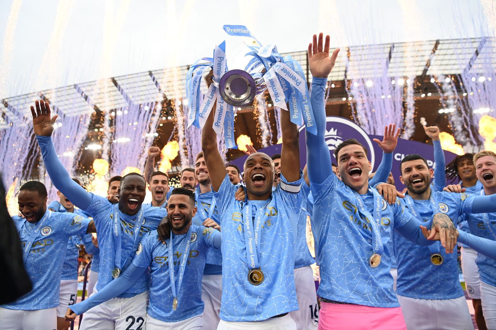
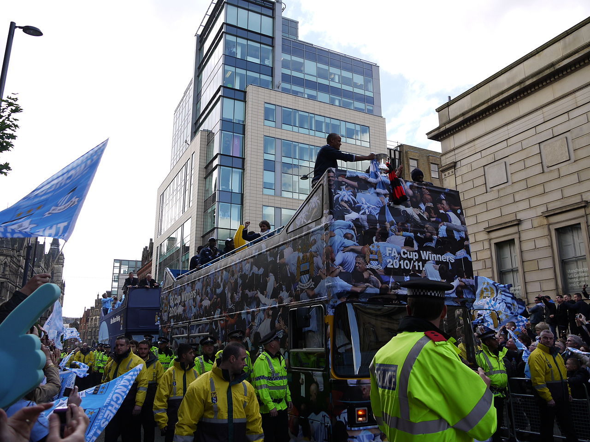
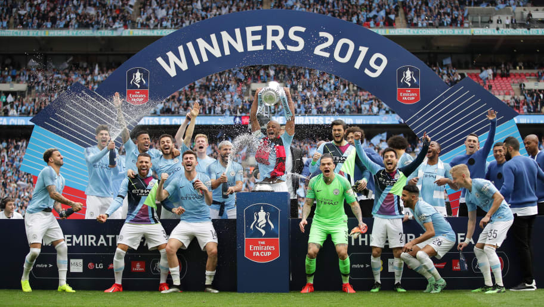
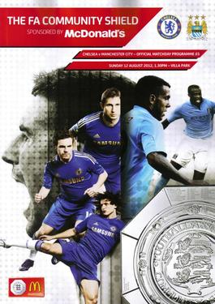
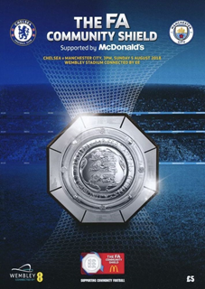
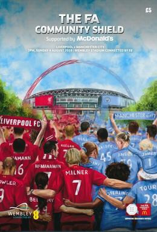

Our Achievement 2010-2021
I. Premier League
1. 2011-2012 Premier League
The 2011–12 Premier League (known as the Barclays Premier League for sponsorship reasons) was the 20th season of the Premier League since its establishment in 1992. The season began on 13 August 2011 and ended on 13 May 2012 with Manchester City sealing their first league title since 1968 with victory over Queens Park Rangers on the final day. The title was City's first Premier League success, making them the fifth club to win the Premier League in its 20-year history.[3] City finished level on 89 points with Manchester United, but their goal difference was eight better than their local rivals', making it the first time the Premier League had been won on goal difference. The league was contested by 20 teams, 17 returning from the 2010–11 season and three promoted from the Football League Championship. Championship winners Queens Park Rangers and runners-up Norwich City gained automatic promotion whilst Swansea City gained promotion through the Football League Championship play-offs beating Reading 4–2 in May 2011, becoming the first non-English team to play in the Premier League. All three promoted clubs avoided relegation for the first time since the 2001–02 campaign. The season was voted as the greatest Premier League season in the Premier League 20 Seasons Awards.[4]
2. 2013-2014 Premier League

The 2013–14 Premier League (known as the Barclays Premier League for sponsorship reasons) was the 22nd season of the Premier League, the top-flight English professional league for men's football clubs. The fixtures were announced on 19 June 2013. The season started on Saturday 17 August 2013, and concluded on Sunday 11 May 2014. On the final day of the season, Manchester City sealed their fourth league title and second Premier League title with a 2–0 victory over West Ham United, finishing with 86 points. Liverpool had looked on course to win the title with two weeks to go, but a loss and a draw in two of their last three matches, combined with Manchester City winning their final five league matches, ultimately meant they finished in second place with 84 points. Chelsea finished third and Arsenal, who led the table for the longest period, finished fourth. Manchester United had a disappointing season attempting to defend their title and ended up seventh, a then-joint worst performance for Premier League holders. Norwich City, Fulham, and Cardiff City finished in the bottom three and were relegated to the Football League Championship. Luis Suárez was the top scorer with 31 goals, and was also named Player of the Season. Goalkeepers Wojciech Szczęsny of Arsenal and Petr Čech of Chelsea led the league with 16 clean sheets each. Tony Pulis of Crystal Palace won the Manager of the Season award.
3. 2017-2018 Premier League
The 2017–18 Premier League was the 26th season of the Premier League, the top English professional league for association football clubs, since its establishment in 1992. The season started on 11 August 2017 and concluded on 13 May 2018. Fixtures for the 2017–18 season were announced on 14 June 2017.[3] Chelsea were the defending champions, while Newcastle United, Brighton & Hove Albion and Huddersfield Town entered as the promoted teams from the 2016–17 EFL Championship. Manchester City won their third Premier League title, and fifth English top-flight title overall, with five games to spare.[4] The team broke numerous Premier League records over the course of the season, including: most points (100), most wins (32), most away wins (16), most goals (106), most consecutive league wins (18), highest goal difference (+79), fewest minutes behind in matches (153 minutes) and biggest winning points margin (19).[5][6] All three promoted clubs avoided relegation for the first time since the 2011–12 campaign, and for only the third time in Premier League history.
4. 2018-2019 Premier League
The 2018–19 Premier League was the 27th season of the Premier League, the top English professional league for association football clubs, since its establishment in 1992. The season started on 10 August 2018 and concluded on 12 May 2019.[2][3] Fixtures for the 2018–19 season were announced on 14 June 2018. The league was contested by the top 17 teams from the 2017–18 season as well as Wolverhampton Wanderers, Cardiff City and Fulham, who joined as the promoted clubs from the 2017–18 EFL Championship. They replaced West Bromwich Albion, Swansea City and Stoke City who were relegated to the 2018–19 EFL Championship.[4] Defending champions Manchester City won their fourth Premier League title, and sixth English top-flight title overall. They won their last 14 league games and retained the league title on the final day of the season, finishing on 98 points. Liverpool finished runners-up with 97 points – the highest total in English top-flight history for a second-placed team.
5. 2020-2021 Premier League
The 2020–21 Premier League was the 29th season of the Premier League, the top English professional league for association football clubs since its establishment in 1992. The season was initially scheduled to start on 8 August 2020 and end on 16 May 2021,[2] but this was delayed until 12 September as a consequence of the postponement of the previous season's conclusion due to the COVID-19 pandemic.[3] Manchester City secured a fifth Premier League title and seventh English league title overall with three matches to spare; it was also the club's third title in the last four seasons
II. FA Cup
1. 2010-2011 FA Cup
The 2010–11 FA Cup (known as The FA Cup sponsored by E.ON for sponsorship reasons) was the 130th season of the world's oldest football knockout competition; the FA Cup. A total of 806 clubs applied to enter of which 759 were accepted,[1] a slight drop compared to the 762 clubs accepted into the 2009–10 competition. The competition commenced on 14 August 2010 with the Extra preliminary round and concluded on 14 May 2011 with the Final, held at Wembley Stadium.[2] Unusually, this was not the last game of the English domestic season nor the only game played on that day. Wembley Stadium was also hosting the 2011 Champions League Final on 28 May, forcing the FA Cup Final to be played at least two weeks earlier. This meant the Final was played on the penultimate weekend of the Premier League season and, apart from the finalists who were scheduled to play a league match against each other, a full programme of matches was played. The defending champions were Chelsea, who retained their title in the 2010 final against Portsmouth, but they lost to Everton in the fourth round. The tournament winners were Manchester City, who defeated Stoke City in the final with Yaya Touré scoring the only goal of the match in the 74th minute.[3] The FA Cup winners are normally entitled to a place in the next season's UEFA Europa League unless they have already qualified for that tournament or for the UEFA Champions League; because Manchester City qualified for the 2011–12 UEFA Champions League via their top-four finish in the 2010–11 Premier League, Stoke qualified for the 2011–12 UEFA Europa League as runners-up.[4]
2. 2018-2019 FA Cup
The 2018–19 FA Cup (also known as the Football Association Challenge Cup) was the 138th edition of the oldest football tournament in the world. It was sponsored by Emirates and known as The Emirates FA Cup for sponsorship purposes. It started with the Extra Preliminary Round on the weekend of 11 August 2018 and concluded with the final on 18 May 2019. Premier League side Chelsea were the defending champions, but they were eliminated by Manchester United in the fifth round on 18 February 2019 in a rematch of the previous year's final. Manchester City won their sixth FA Cup title and their first since 2011, making them the first English club to complete a domestic treble, having earlier won the EFL Cup and the Premier League.[1]
III. FA Community Shield
1. 2012 FA Community Shield
The 2012 FA Community Shield (also known as The FA Community Shield sponsored by McDonald's for sponsorship reasons) was the 90th FA Community Shield, a football match played on 12 August 2012 between the winners of the previous season's Premier League and FA Cup competitions. The match was contested by the 2012 FA Cup winners, Chelsea, and the champions of the 2011–12 Premier League, Manchester City. The 2012 Community Shield was not played at its usual venue, Wembley Stadium, as the stadium hosted the final of the 2012 Olympic football tournament on the same weekend as the proposed date for the Community Shield.[3] It was played instead at Aston Villa's home ground, Villa Park, in Birmingham. It was the first time since the fixture was played at Maine Road in 1973 that the Community Shield had been hosted at a venue other than Wembley (old and new) or the Millennium Stadium. Manchester City won the game 3–2 to claim their first Community Shield since 1972.
2. 2018 FA Community Shield
The 2018 FA Community Shield (also known as The FA Community Shield supported by McDonald's for sponsorship reasons) was the 96th FA Community Shield, an annual football match played between the title holders of the Premier League and FA Cup. It was contested by Manchester City, champions of the 2017–18 Premier League, and Chelsea, the winners of the 2017–18 FA Cup, at Wembley Stadium in London on 5 August 2018. Manchester City won 2–0, with both goals scored by Sergio Agüero, who was named man of the match for his performance.
3. 2019 FA Community Shield
The 2019 FA Community Shield (also known as The FA Community Shield supported by McDonald's for sponsorship reasons) was the 97th FA Community Shield, an annual football match played between the winners of the previous season's Premier League and FA Cup.[4] As Manchester City won both competitions in 2019, their opponents were the 2018–19 Premier League runners-up, Liverpool.[5][6] The match was played at Wembley Stadium on 4 August 2019. Manchester City defended the trophy they won in 2018, winning 5–4 on penalties